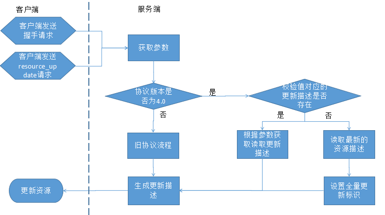

离线资源优化需求
1 背景
离线资源是EMP应用运行时所依赖的重要模块，其功能性、性能、可用性和容错处理直接影响着终端用户的使用体验。随着离线协议升级到3.0版本，离线资源在安全性、连接复用和报文瘦身等方面做了很多优化，功能性需求基本得到满足。但在实际应用中，依然存在诸如客户端描述过大导致请求耗时高、大量文件更新导致下载速度慢、下载无用资源导致多余的流量、电量消耗及CPU消耗等非功能性问题。本文将讨论离线功能尚待优化的非功能需求。
2 预期读者
- 需求提出者。确认需求是否满足目标
- 设计人员。理解需求，后续给出合理的设计方案
- 客户端和后台研发人员。理解需求，后续保证代码实现贴合需求
- 测试人员。理解需求，后续制定合理的用例设计和测试方案
- 产品经理。需求是否通过
3 参考资料
无
4 需求概述
用户对于离线协议的核心诉求是：
- 通过离线协议加速APP获取资源速度，提升用户体验
- 在不降低原有的用户体验的同时，解决离线资源的更新问题
而4.0之前的离线实现存在的主要问题包括：
- 离线资源描述占上行流量，导致网络开销大（移动3G下>10秒）
- 离线下载列表返回之前，用户访问资源会出现异常，体验差于使用离线之前
- 使用离线资源确保更新时可能出现网络下载失败，体验差于使用离线之前
- 预置资源过大时，会显著影响Android低端设备的启动速度（ >6秒），使用体验差于使用离线之前
- 移动网络下未考虑离线自动下载导致的流量消耗用户是否接受
5 可用性要求
| 应用场景 |
可用性描述 |
指标 |
| APP启动-资源预置 |
给出不同机型预置资源大小和耗时的测试结果，作为用户选择合理预置资源大小的依据 |
预置资源处理时间占APP启动时间<10% |
| APP启动-资源比对 |
给出不同网络环境下，不同大小下载列表数据块对网络时间影响的测试结果 |
返回下载列表对同步网络请求响应时间影响<30% |
| 离线资源更新 |
可根据网络环境选择离线更新的时机，可让应用开发人员定制相应的用户提示和下载时机 |
--- |
| 离线资源使用 |
无论资源是否存在，不影响用户的正常使用 |
--- |
6 功能描述
6.1 网络传输(resource_update接口)优化
6.1.1 问题
目前resource_update接口在离线更新流程中用于对比客户端和服务端两者存储的描述文件差异，从而生成更新描述（包含下载列表和删除列表）。在交行3.0项目中，离线资源数量巨大，描述文件大小约为400K。客户端在访问resource_update接口上传客户端描述时，受上行带宽影响，一次请求会消耗几秒甚至十几秒的时间。如果应用首页同步处理离线更新，那么将导致应用在这段时间内无法进入首页。
6.1.2 优化需求
- 在请求resource_update接口时，客户端不再上送本地描述，而是上送描述的版本号。版本号可以使用描述文件的摘要值。
- 服务端维护各版本到最新版本的更新描述（下载列表和删除列表）。
- 在上传离线资源时，服务端根据所有已上传资源生成最新版本的描述。并修改各旧版本到最新版本的更新描述。
- 在处理resource_update请求时，服务端根据请求版本号读取对应旧版本的更新描述返回给客户端。
- 旧版本的更新描述需要按平台和分辨率进行区分。
- 为限制更新描述对服务器资源的占用，服务器需要制定按时间和版本个数清理更新描述的策略。
- 由于以上机制，可能存在客户端使用的版本在服务端已被清除的情况，此时服务端直接返回最新版本的资源描述，并增加一个标记，用于通知客户端全量更新。
- 离线资源上传成功以最新版本描述生成为标识。各旧版本更新描述采用异步方式，按从新到旧的顺序修改。即在离线资源上传后，客户端使用旧版本资源可能无法更新到最新版本（在一个短暂的时间窗口内），但最终依然可以更新到最新版本。
- 服务端须维护各旧版本必选资源和可选资源的更新描述。
- 如在下载资源时因为下载失败而中断了更新流程，客户端需要保证已下载的资源在下一次更新时不会重复下载。
- 新流程不影响离线协议旧版本已实现的功能。
- 修改后resource_hash接口将不再需要。因此信道中原来复用的resource_hash流程须替换为resource_update流程。
- 在建立信道的Lua方法中增加一个参数，用来指定：离线资源同步、离线资源异步更新和脚本控制三种情况。默认值为脚本控制。
- 如离线资源同步更新，信道复用resource_update流程无效特殊处理。
- 如离线异步更新，信道复用resource_update流程须按更新描述大小区分返回值。如更新描述大于100K，则resource_update返回值为一个标识，此时客户端须异步请求resource_update接口获取更新描述并下载资源。如果更新描述小于100K，则客户端直接异步下载资源即可。描述大小的阈值可在服务端配置，且可根据不同网络环境区分。客户端在握手请求中增加网络环境参数，以便服务端识别当前设备正在使用的网络环境。
- 如由脚本控制，则客户端不需在信道中复用resource_update流程。
- update_hash方法须按有更新的情况返回且不请求resource_hash接口，以兼容旧脚本使用。
满足以上需求后会带来以下优化：
- 客户端请求resource_update接口的上行流量不再受到资源个数影响，且降低了受上行带宽限制影响的可能性。
- 服务端在处理resource_update接口时，直接读取对应版本的更新描述，而不再执行描述比对流程。简化了处理逻辑，提高接口访问性能。
- 不用再访问resource_hash接口。因为客户端可以通过描述摘要值直接访问resource_update接口获取更新列表。减少了网络交互次数，从而降低离线更新流程总耗时。
resource_update优化后的流程为：

6.1.3 影响范围
- 对离线资源更新流程有影响，对下载流程没有影响。
- 对握手流程有影响。因为之前将resource_hash流程嵌入到握手流程中，resource_update优化后须替换resource_hash流程。对握手流程有改动。
6.2 异常处理
6.2.1 问题
在移动网络环境下，网络条件不稳定。资源下载很有可能出现下载失败的情况，这时会对应用的可用性造成较大影响。例如首页中使用的Lua脚本下载失败，且首页初始化时使用了该脚本增加的函数，那么会出现首页初始化失败的情况。往往在生产环境下，客户端会关闭Lua报错配置。此时在没有任何报错信息、首页只显示空白页面的情况下，用户完全不知道程序在做什么，出现了什么错误，造成较差的用户体验。并且没有任何错误提示也不利于定位问题。
6.2.2 优化需求
- 对于确保更新的脚本和页面资源，使用资源时发现下载失败，则提示错误信息。
- 根据文件扩展名判断是否为脚本和页面。默认扩展名为：xhtml、html、lua、js
- 扩展名可配置。
- 提供下载失败时的默认处理流程
- 提供回调机制，使得开发人员可以定义全局和页面私有的回调。
- 下载失败后可选择的处理流程有重试和退出。
6.2.3 影响范围
6.3 移动网络环境可由用户控制流量消耗
6.3.1 问题
用户在使用移动数据访问网络时，最关心的问题之一就是流量消耗。离线资源功能在提示用户更新时，并没有明确提示会消耗流量以及消耗多少流量。况且有些项目会将离线更新的提示关闭，此时在用户毫不知情的情况下会产生流量消耗。如在2G网络环境下，还可能出现资源下载失败导致的重新下载，会进一步增加网络流量的消耗。
6.3.2 优化需求
- 描述中增加文件大小字段。更新描述中额外增加总大小字段。
- 为了避免文件大小字段对描述文件大小产生较大影响，文件大小字段须带有单位（b、k、m）。
- 如果大小达到兆字节，使用单位为m；达到千字节，使用单位为k；否则使用单位b。
- 文件大小字段最多保留一位小数。
- 必选资源update_desc脚本方法回调中增加下载量参数，使得脚本人员可以获取下载量。
- 增加获取网络环境的Lua API。
- 增加获取指定可选插件下载量的脚本方法。
- 页面开发人员可以根据下载量、网络环境及实际需求进行开发。
6.3.3 使用示例
以下示例以伪代码形式解释使用脚本提示下载量的方法，不代表具体设计和实现细节
update_desc(update_demo);
......
--size为本次更新的下载量
function update_demo(state, size)
if state > 0 then
local net_env = get_network_env(); --获取网络环境
if size > 1024*1024 and net_env != "wifi" then
window:alert("检测到您处于移动网络环境，该操作将产生较大流量，是否继续？", "继续", "取消", alert_callback);
else
-- 下载资源
end
end
end
function alert_callback(index)
if index == 0 then
-- 下载资源
end
end
6.4 实时下载
6.4.1 问题
虽然我们在离线协议的第一个版本就引入了可选资源，给开发者提供了较为灵活的、可定制的资源更新流程。但实际中，由于对离线资源功能理解的不充分、降低交易开发复杂度等原因，使得项目组更倾向于使用必选资源。
此外在可选资源更新时，服务端会将整个可选资源的描述都返回给客户端。因此更新可选资源时，响应内容大小会受到可选资源个数的影响。资源越多，产生的不必要的流量越多。
综上，必选资源应该是应用中使用的主要类型。
在手机银行应用中，可能存在成百上千只交易。而对于多数用户来说，大部分交易都不是必要的，因此这些不必要的资源对于用户来说是可以不更新的。但这些资源多数都会成为必选资源下载到本地，或预置到本地。对于程序包的大小、程序消耗的资源（内存、数据库）、下载消耗的流量都存在不必要的消耗。
6.4.2 优化需求
- 客户端实现实时下载机制，在使用资源时触发实时下载。
- 必选资源会由客户端自动更新，可选资源由脚本控制下载或实时下载。
- 未及时更新的必选资源也可由实时下载触发更新。
- 如对可选资源更新有流量提醒、显示进度条等需求时，只能通过脚本实现。实时下载是客户端自动触发的。
- 实时下载的资源须缓存在客户端，下一次使用（且未更新）时不再触发下载。除非实时下载的资源不在客户端下载列表和资源描述中（可能为服务端新增资源），此时不缓存资源。
- 实时下载应下载最新的资源使用。如为确保更新资源且下载失败，则按可用性优化需求提示错误。否则使用旧资源，如果此时没有旧资源（首次更新），则须在页面或脚本中容错。
6.4.3 影响范围
6.5 离线多App优化
6.5.1 问题
多App功能在离线版本3.0时提出，目的是要将手机银行的App服务细化，由多个微型服务器提供服务，离线资源也保存在这些服务器上。
现在交行将所有的离线资源统一存放在一个共享盘中，便于离线资源的统一管理与维护，同时，H5类型服务器也可能需要支持H5插件的形式，而且离线资源的上传需要有增量上传的功能。
6.5.2 优化需求
- 离线资源路径可以自定义配置，并且需要按照AppName的结构分别保存各自的离线资源。
- 废弃掉原多App转发的概念，统一由EWP平台维护离线资源。
- 原H5类型服务器资源，上传方式改为：EWP类型服务器的H5资源(可支持H5插件)。
6.5.3 影响范围
7 版本历史
| 版本号 |
日期 |
作者 |
描述 |
| v1.0 |
2015.12.16 |
黄鑫 |
初稿 |
| v1.1 |
2015.12.17 |
黄鑫 |
补充resource_update接口优化需求描述 |
| v1.2 |
2015.12.22 |
黄鑫 |
根据12/22评审纪要修改可用性优化和下载提醒优化描述 |
| v1.3 |
2015.12.24 |
黄鑫 |
根据12/23评审纪要修改优化描述 |
| v1.4 |
2015.12.25 |
黄鑫 |
根据12/24评审纪要修改优化描述 |
| v1.5 |
2015.12.25 |
曹煦 |
添加需求概述，修改功能描述的标题 |
| v1.6 |
2016.01.17 |
于鑫(yu.xin1) |
添加交行离线多App功能需求 |